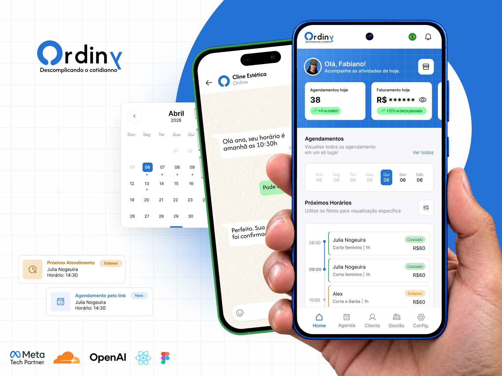
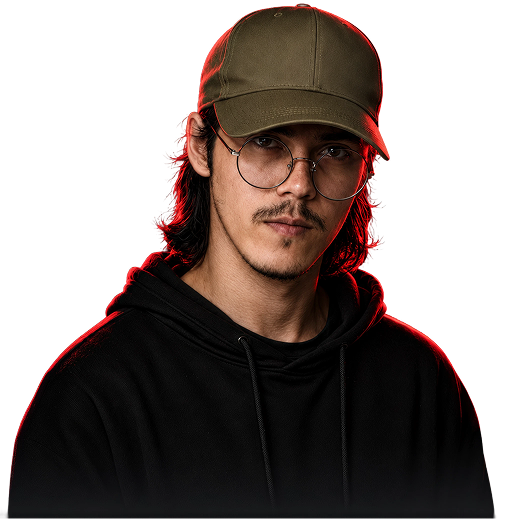
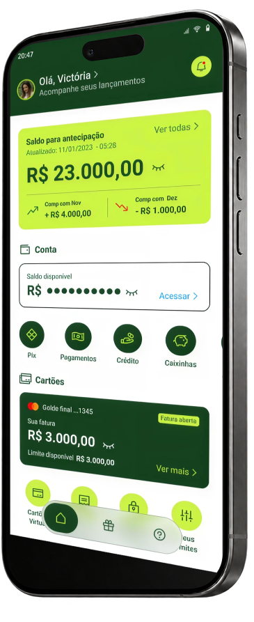

ORDINY · SAAS
Uma agenda.
Um produto inteiro.
Do design à aplicação funcional: UX/UI, desenvolvimento, arquitetura e infraestrutura no mesmo projeto.
MEU PAPEL
Produto · UX/UI · Desenvolvimento
Ler estudo de caso ↗
PRODUCT DESIGNER × UX ENGINEER
Transformo regras complexas em experiências claras, do desenho dos fluxos à interface em produção.
7+ ANOS · FINTECH · SAAS · SERVIÇOS

Thinking in journeys. Designing in systems.
TRABALHOS SELECIONADOS
Três projetos, desafios diferentes. Em cada um, conecto design, tecnologia e necessidades das pessoas.
ORDINY · SAAS
Do design à aplicação funcional: UX/UI, desenvolvimento, arquitetura e infraestrutura no mesmo projeto.
MEU PAPEL
Produto · UX/UI · Desenvolvimento
Ler estudo de caso ↗
Antecipar é simples.
Dar segurança antes do clique
é o desafio.

CASH ADVANCE · FINTECH
Antecipação de fretes com foco em clareza e segurança na jornada financeira.
Ler estudo de caso ↗SANDFIT ARENA · BEM-ESTAR
Uma experiência que conecta a descoberta da arena à escolha do treino e à reserva.
Ler estudo de caso ↗Veja também Lumen e Aqui Limpa na coleção completa.
PRODUCT THINKING ✦ UX STRATEGY ✦ UI DESIGN ✦ DESIGN SYSTEMS ✦ PROTOTYPING ✦ FRONT-END ✦ ACCESSIBILITY
WORKBENCH
Explore a ligação entre problema, escolha e entrega na Ordiny.
CONTEXTO / ORDINY · SAAS
Conversas, reservas, atendimentos e pagamentos estavam desconectados. O desafio era integrar essas etapas.
JORNADA / VISÃO DO PRODUTO
A experiência conecta informações e tarefas.
ATUAÇÃO / PRODUTO + DESIGN + CÓDIGO
Painel, link público e WhatsApp passam pela mesma validação de disponibilidade.
AGENDAMENTO / CANAIS
Os três canais revalidam a reserva na confirmação.
ENTREGA / APLICAÇÃO FUNCIONAL
Agenda, clientes, equipe, pagamentos e WhatsApp em uma aplicação em desenvolvimento.
ENTREGA / APLICAÇÃO FUNCIONAL
PRODUTO + UX/UI + DESENVOLVIMENTO
Ler o estudo de caso da Ordiny ↗EXPERIÊNCIA
Atuo em produto, design e engenharia para transformar regras, restrições e necessidades em experiências claras e fáceis de usar.
Consultor de UX/UI · 2025 a 2026
Design de soluções de BI, pesquisa de necessidades, avaliações de usabilidade e governança de design systems.
UI/UX Designer · 2024 a 2025
Usabilidade e design systems em apostas e pagamentos.
UI/UX Designer · 2022 a 2023
Cadastro de clientes, verificação de identidade (KYC) e acessibilidade em jornadas financeiras.
UX Engineer · 2020 a 2023
Integração entre design e front-end em contas digitais, Pix e terminais de pagamento (POS).
UI/UX Designer · 2019 a 2020
Arquitetura da informação e jornadas de pagamento.
VAMOS CONVERSAR
Tem uma oportunidade ou um desafio de produto? Vamos conversar.
fabiano.antero@gmail.com ↗LinkedIn ↗WhatsApp ↗